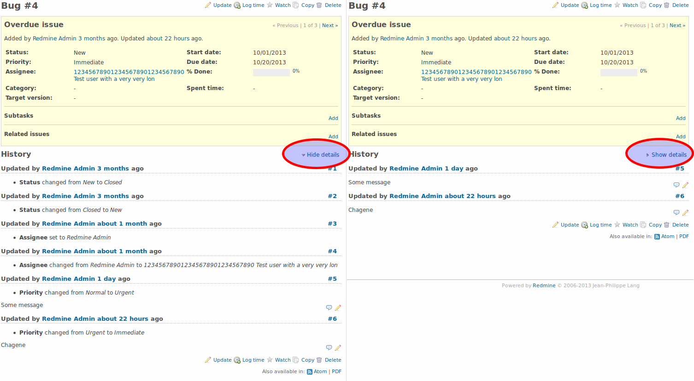

Redmine Collapsed Journals Plugin
Collapses issue history items without an assosiated note.
Translated into 4 languages: English, German, Russian, Ukrainian, Brazilian Portuguese.
This plugin is the fork of Hide Journal Details plugin by Jürgen Diez.
Screenshot

Installation notes
Plugin's directory should be named collapsed_journals exactly.
Other installation instructions are generic and can be found at Redmine Plugins page.
Compatible with Redmine 2.4, 2.3, 2.2.